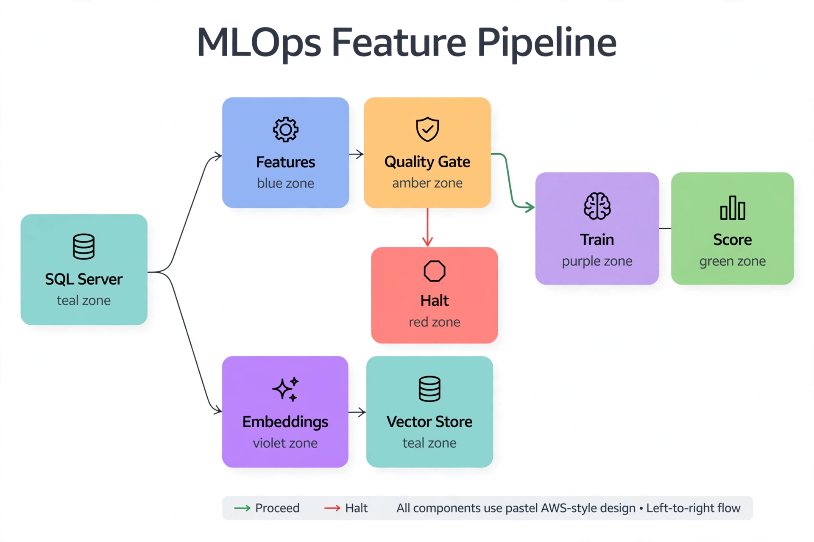

Chapter 38: Building the AI-Ready Data Platform
Every AI workflow in this book — anomaly detection, forecasting, LLM-assisted remediation, privacy-preserving training — runs on top of a data platform that was designed for transactions, not for machine learning. The gap shows up in predictable places: feature engineering queries that scan production tables and contend with the OLTP workload, embeddings with nowhere to live, models trained in notebooks that nobody can reproduce six months later, and inference calls that bypass every governance control the DBA built. "AI-ready" is the set of platform decisions that close that gap: where features live, where vectors live, where models live, and how data flows between those places without breaking the production database.
This chapter is a decision guide for the DBA who owns that platform. It covers the feature store pattern on SQL Server, vector storage and semantic search, in-database and external model serving options, data quality gates that protect model inputs, and the MLOps lifecycle that keeps models trustworthy after deployment. The throughline is always the same: these are platform choices that exist because AI workloads have requirements — reproducibility, low-latency similarity search, governed inference — that transactional workloads never imposed.
---
What "AI-Ready" Actually Requires
Strip away the marketing and an AI-ready SQL Server platform has five capabilities that a conventional OLTP platform lacks. Curated feature storage — versioned, documented tables of model-ready features, separate from raw transactional tables, so training never scans production. Vector storage and similarity search — a first-class home for embeddings, because RAG and semantic search are now standard DBA-adjacent workloads. Model execution paths — sanctioned ways to run models against database data, in-database or via governed endpoints, instead of engineers exporting CSVs to laptops. Input quality gates — automated checks that stop bad data from reaching models, because models fail silently on data they were never trained on. Model lifecycle management — versioning, A/B comparison, and drift monitoring, because a deployed model is a production dependency with an SLA.
Notice what is not on the list: bigger hardware, a data lake, a new database engine. AI-readiness is mostly an organizational pattern implemented with the SQL Server you already run. The rest of this chapter builds each capability.
---
The Feature Store: Training Data as a Governed Product
The single highest-leverage decision is also the simplest: stop letting training pipelines query production tables directly. Every ad-hoc feature query against the OLTP database is ungoverned load, unversioned logic, and a privacy review that never happened. A feature store replaces that with curated, versioned feature tables in a dedicated database — computed on a schedule from production via CDC or replication, documented with extended properties, and access-controlled independently of the source system.
-- Feature store skeleton: versioned, documented, append-friendly
CREATE SCHEMA ml AUTHORIZATION dbo;
GO
CREATE TABLE ml.customer_features_v3 (
customer_token CHAR(32) NOT NULL, -- de-identified join key (Ch.36)
feature_date DATE NOT NULL, -- point-in-time correctness
region SYSNAME NOT NULL,
orders_90d INT NOT NULL,
spend_90d DECIMAL(18,2) NOT NULL,
avg_order_value DECIMAL(18,2) NOT NULL,
days_since_order INT NOT NULL,
support_tickets_90d INT NOT NULL,
feature_version TINYINT NOT NULL DEFAULT 3,
computed_at DATETIME2 NOT NULL DEFAULT SYSUTCDATETIME(),
CONSTRAINT PK_customer_features_v3 PRIMARY KEY (customer_token, feature_date)
);
GO
-- Document every feature where the data scientists will actually find it
EXEC sys.sp_addextendedproperty
@name = N'ML_Feature_Definition', @value = N'Count of completed orders in trailing 90 days. Excludes cancelled orders.',
@level0type = N'SCHEMA', @level0name = 'ml',
@level1type = N'TABLE', @level1name = 'customer_features_v3',
@level2type = N'COLUMN', @level2name = 'orders_90d';
GO
-- Point-in-time correctness check: no feature may use data newer than its feature_date
-- (prevents training-serving skew, the #1 silent killer of model quality)
SELECT feature_date, COUNT(*) AS rows_computed,
MAX(computed_at) AS last_compute
FROM ml.customer_features_v3
GROUP BY feature_date
ORDER BY feature_date DESC;Three design rules make a feature store AI-ready rather than just another mart. Point-in-time correctness: every feature row is stamped with the as-of date its inputs were valid for, so training on historical data never accidentally uses information from the future — training-serving skew is the most common silent model killer, and this schema makes it structurally impossible. Versioned definitions: when a feature's logic changes, you create customer_features_v4, never alter v3 in place, so models trained on v3 remain reproducible. De-identified join keys: the store holds tokens, not raw identifiers (Chapter 36), so the feature store is safe to expose to the data science team under RLS without a separate privacy review per project.
Populate the store from CDC change streams or a read replica, never from the primary — feature computation is batch analytical load and has no business contending with transactions. The DBA's job here is the pipeline that keeps features fresh, the retention policy that bounds storage growth, and the access grants that keep the science team productive without touching production.
---
Vector Storage and Semantic Search in SQL Server
Retrieval-augmented generation is the AI workload most likely to land on a DBA's desk next: "we need semantic search over our knowledge base / ticket history / documentation, and it has to live in SQL Server." SQL Server 2025's native vector data type plus the VECTOR_DISTANCE function make this a database problem rather than a new-infrastructure problem — which means the DBA gets to keep governance, backup, and access control instead of standing up a separate vector database nobody owns.
-- Knowledge base embeddings: generated once by an embedding model,
-- stored and searched natively in SQL Server 2025+
CREATE TABLE ml.kb_embeddings (
doc_id INT IDENTITY PRIMARY KEY,
source_table SYSNAME NOT NULL, -- where this chunk came from
source_key NVARCHAR(200) NOT NULL, -- PK of the source row
chunk_text NVARCHAR(MAX) NOT NULL, -- the embedded text, kept for grounding
embedding VECTOR(1536) NOT NULL, -- matches the embedding model dims
indexed_at DATETIME2 NOT NULL DEFAULT SYSUTCDATETIME()
);
GO
-- Semantic search: nearest chunks to a query embedding
-- (@q is the query text embedded by the same model, passed as a parameter)
DECLARE @q VECTOR(1536) = CAST(@query_embedding_json AS VECTOR(1536));
SELECT TOP 5
doc_id, source_table, source_key,
LEFT(chunk_text, 300) AS chunk_preview,
VECTOR_DISTANCE('cosine', embedding, @q) AS distance
FROM ml.kb_embeddings
ORDER BY VECTOR_DISTANCE('cosine', embedding, @q);
-- Add: WHERE source_table IN (...) to scope search by tenant/region (RLS-friendly)The DBA decisions that matter here are not about the embedding model — the data science team owns that. They are about lifecycle and governance of the vectors: re-embedding policy when the source documents change (stale embeddings silently degrade RAG quality — schedule re-embedding off the same CDC stream that feeds the feature store), dimension discipline (every row in a table must use the same embedding model and dimension, enforced by the VECTOR(1536) declaration), and scoping (the source_table column plus RLS ensures a tenant's semantic search never surfaces another tenant's documents — the vector equivalent of the row-level security from Chapter 36). Backups already cover the table; no new infrastructure to protect.
For scale beyond what brute-force VECTOR_DISTANCE scans handle comfortably, partition the embeddings table by tenant or topic and keep hot partitions in memory — the same partitioning judgment you already apply to large tables, now serving an AI workload.
---
Model Serving: Where Inference Is Allowed to Happen
Once models exist, they need sanctioned execution paths. The failure mode you are preventing is the shadow pipeline: an engineer exports a table to CSV, scores it in a notebook, and emails predictions to the business — no audit trail, no version control, no monitoring. Give the organization two blessed paths and the shadow pipelines wither.
Path 1 — In-database scoring with PREDICT. For models that can be expressed as ONNX or native T-SQL, PREDICT scores rows without data ever leaving SQL Server. This is the right path for operational models — churn scores refreshed nightly, fraud flags on new transactions — because it inherits the database's security, auditing, and scheduling. The DBA versions the model binary in a table alongside its training metadata, and swapping models is a metadata update, not a deployment.
Path 2 — Governed external endpoints. For models that cannot run in-database (LLMs, large ensembles), the sanctioned path is a model endpoint — Azure ML managed online endpoint or a containerized service — called from a controlled integration layer, never directly from ad-hoc queries. The DBA's contribution is the contract: which service principal may call the endpoint, what input data it may send (tokenized features from the store, never raw PII), and logging of every inference request for the audit trail.
-- Model registry: every deployed model versioned with its training lineage
CREATE TABLE ml.model_registry (
model_name SYSNAME NOT NULL,
model_version INT NOT NULL,
feature_version TINYINT NOT NULL, -- which feature store version it trained on
training_cutoff DATE NOT NULL, -- last feature_date in training data
onnx_model VARBINARY(MAX) NULL, -- NULL for externally-hosted models
endpoint_url NVARCHAR(500) NULL, -- NULL for in-database models
deployed_at DATETIME2 NOT NULL DEFAULT SYSUTCDATETIME(),
deployed_by SYSNAME NOT NULL DEFAULT SUSER_SNAME(),
status VARCHAR(20) NOT NULL DEFAULT 'staging'
CHECK (status IN ('staging','production','retired')),
CONSTRAINT PK_model_registry PRIMARY KEY (model_name, model_version)
);
GO
-- Promote a model: single audited statement, reversible
UPDATE ml.model_registry SET status = 'retired'
WHERE model_name = 'churn_v1' AND status = 'production';
UPDATE ml.model_registry SET status = 'production'
WHERE model_name = 'churn_v1' AND model_version = 4;
-- Nightly in-database scoring against the feature store (Path 1)
SELECT f.customer_token,
CAST(p.prediction AS FLOAT) AS churn_probability
FROM ml.customer_features_v3 f
CROSS APPLY (
SELECT * FROM PREDICT(
MODEL = (SELECT onnx_model FROM ml.model_registry
WHERE model_name = 'churn_v1' AND status = 'production'),
DATA = (SELECT orders_90d, spend_90d, avg_order_value,
days_since_order, support_tickets_90d)
)
) p
WHERE f.feature_date = CAST(GETUTCDATE() AS DATE);The registry is the artifact auditors and incident responders reach for first: which model version is in production, what feature version it trained on, what data cutoff it saw. When a model's predictions degrade, that lineage tells you whether the model changed, the features changed, or the world changed — and each points at a different fix.
---
Data Quality Gates: Protecting Model Inputs
Models fail silently on bad inputs. A feature pipeline that starts emitting nulls after an upstream schema change does not raise an error — it just feeds zeros into the model, and predictions drift for weeks before anyone notices. The AI-ready platform treats feature quality with the same seriousness as backup integrity: automated checks, on a schedule, with alerts.
-- Feature quality gate: runs after every feature computation batch
-- Fails loudly (THROW) so the pipeline halts instead of poisoning the store
DECLARE @feature_date DATE = CAST(GETUTCDATE() AS DATE);
DECLARE @checks TABLE (check_name SYSNAME, passed BIT, detail NVARCHAR(500));
INSERT @checks
SELECT 'row_count_sanity', CASE WHEN COUNT(*) BETWEEN 1000 AND 10000000 THEN 1 ELSE 0 END,
'rows=' + CAST(COUNT(*) AS VARCHAR(20))
FROM ml.customer_features_v3 WHERE feature_date = @feature_date;
INSERT @checks
SELECT 'null_rate_orders_90d', CASE WHEN AVG(CASE WHEN orders_90d IS NULL THEN 1.0 ELSE 0 END) < 0.01 THEN 1 ELSE 0 END,
'null_rate=' + CAST(AVG(CASE WHEN orders_90d IS NULL THEN 1.0 ELSE 0 END) AS VARCHAR(20))
FROM ml.customer_features_v3 WHERE feature_date = @feature_date;
INSERT @checks
SELECT 'distribution_drift_spend',
CASE WHEN ABS(AVG(spend_90d) - (SELECT AVG(spend_90d) FROM ml.customer_features_v3
WHERE feature_date = DATEADD(DAY, -7, @feature_date)))
/ NULLIF((SELECT AVG(spend_90d) FROM ml.customer_features_v3
WHERE feature_date = DATEADD(DAY, -7, @feature_date)), 0) < 0.25 THEN 1 ELSE 0 END,
'week_over_week_mean_shift_check'
FROM ml.customer_features_v3 WHERE feature_date = @feature_date;
-- Halt the pipeline on any failed check; log all results for the audit trail
INSERT INTO ml.feature_quality_log (feature_date, check_name, passed, detail, checked_at)
SELECT @feature_date, check_name, passed, detail, SYSUTCDATETIME() FROM @checks;
IF EXISTS (SELECT 1 FROM @checks WHERE passed = 0)
THROW 50001, 'Feature quality gate failed: investigate before training or scoring.', 1;Three check families cover the failure modes that matter for ML inputs: sanity (row counts within expected bounds — catches truncated loads), completeness (null rates below threshold — catches broken joins and dropped columns), and stability (distribution shift within tolerance — catches upstream semantic changes). The THROW is deliberate: a halted pipeline pages someone today; a poisoned feature store silently degrades every model trained on it for months. Log every check result to ml.feature_quality_log — when predictions drift, the first question is "did the inputs change," and this log answers it.
---
MLOps Lifecycle: Keeping Deployed Models Honest
Deploying a model is the midpoint of its life, not the end. Data drifts, customer behavior changes, upstream systems get replaced — and the model's accuracy decays while its predictions keep flowing into business decisions. The DBA-owned MLOps lifecycle has four recurring jobs: shadow evaluation of challenger models, production monitoring of prediction distributions, scheduled retraining triggers, and rollback that works in minutes.
Shadow evaluation is the pattern that prevents most bad deployments: the challenger model scores the same production features as the champion, but its predictions are logged, not acted on. After two to four weeks you compare — did the challenger actually beat the champion on recent data, or only on the historical test set? Promote only on production-observed evidence. Implement it as a second PREDICT call writing to a ml.shadow_predictions table with the model version stamped on every row.
Production monitoring watches the prediction distribution, not just accuracy (ground truth often arrives weeks late — did the customer actually churn?). If the share of high-risk churn predictions doubles overnight, either the world changed or the inputs broke; the feature quality log distinguishes the two. Alert on prediction distribution shifts with the same PSI threshold from Chapter 37 — the technique transfers directly from replication drift to model drift.
Retraining triggers should be event-driven, not calendar-driven. "Retrain monthly" retrains on schedule whether the model needs it or not; "retrain when prediction PSI exceeds 0.25 for two consecutive weeks or when a new feature version ships" retrains when the evidence says the model is stale. And rollback is a registry status flip — the same two UPDATE statements from the serving section, executable by the on-call DBA at 3 AM without a data scientist on the call.

Teal SQL Server is the source of both pipelines. The upper path builds blue Features, which must clear the amber Quality Gate — sanity, completeness, and stability checks. The green Proceed arrow carries passing features to purple Train and then green Score; the red Halt arrow stops the pipeline on failure and pages the team. The lower path is the document side: violet Embeddings flow into the teal Vector Store, re-embedded on every document change. The diagram's discipline: no feature reaches a model without passing the gate, and no stale embedding stays in the store — data quality is enforced before the model, not debugged after it.
*The AI-ready platform: production data flows through CDC into governed feature and vector stores; quality gates protect every model input; the registry versions every model; prediction monitoring closes the loop back to retraining or rollback.*
---
Key Takeaways
QueryOptimizer — Self-Hosted SQL Performance Workbench
EXPLAIN visualizer · Index advisor · Slow query dashboard · SQL Server
Test yourself on this chapter
5 questions · instant scoring · explanations included